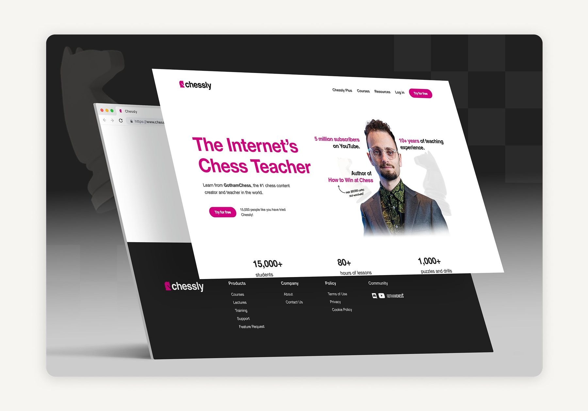
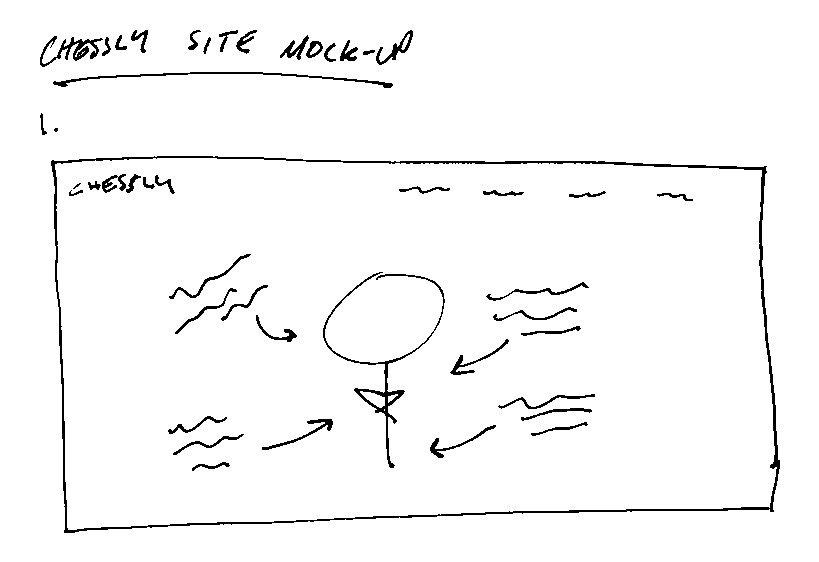
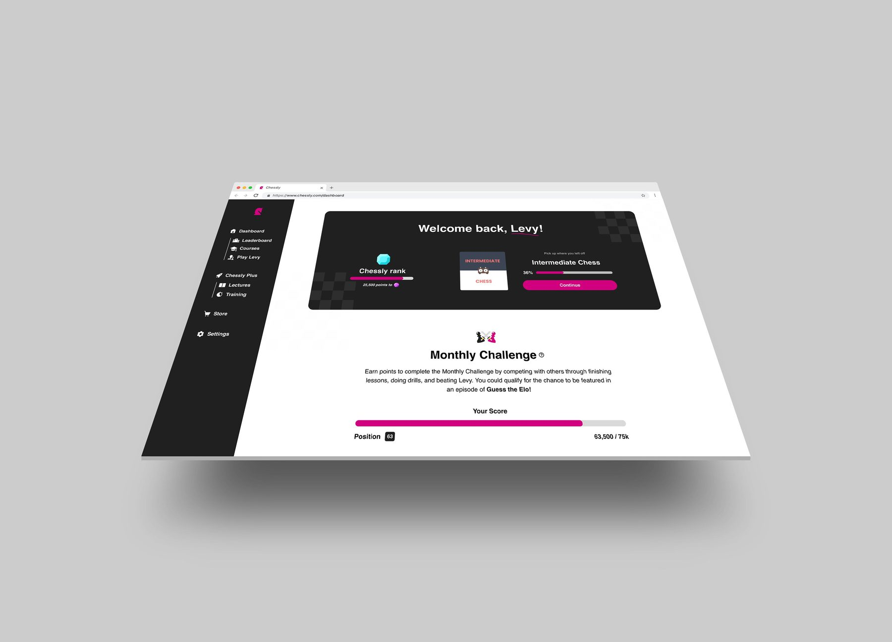

FIG.01 — PRODUCT / UX
Chessly — Homepage & Platform Redesign



Goal
Design a homepage and platform that increases subscription conversion and gamifies chess learning to improve retention.
Problem
The homepage failed to communicate Chessly's core value — learning from GothamChess, the world's largest chess YouTuber. The site felt insider-focused, confusing, and hard to navigate.
Approach
Sketched a full layout redesign leading with a hero section featuring Levy and a clear value proposition. Partnered with the Chessly team to identify conversion-driving content — reviews, average ELO increase, time in platform — then built working mockups in Figma.
Solution
A modern, conversion-focused homepage plus updated platform UX, including gamified elements: points, puzzles, and a leaderboard.
Chessly's user base grew from ~450K to 1.3M following implementation. As a contract designer, Tyler wasn't part of post-launch measurement — this is framed as strong directional evidence, backed by the before/after design work itself.
→ still my favorite redesign